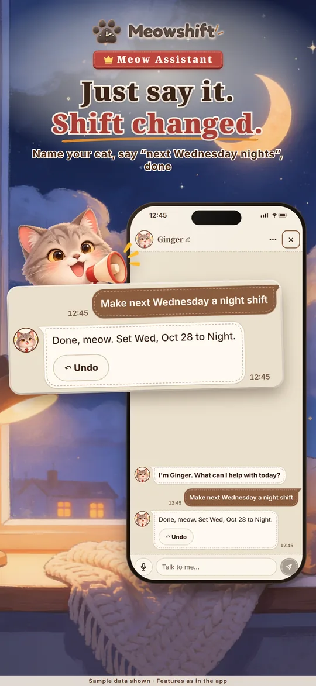

🎁 Semua PRO 7 hari pertama


Meowshift dibuat untuk kamu yang kerja shift: perawat, caregiver, pekerja pabrik dan ritel, satpam, staf hotel dan restoran, juga pekerja paruh waktu. Masukkan shiftmu, lalu lihat hari apa kamu kerja, jam berapa pulang, dan kira-kira berapa gajimu bulan ini.





🎁 Semua PRO 7 hari pertama: semua fitur PRO gratis selama 7 hari setelah diunduh, tanpa pembayaran dan tanpa tagihan otomatis. Setelah itu, fitur dasar tetap gratis, atau kamu bisa berlangganan Meowshift PRO.
Harga berbeda di tiap wilayah; yang berlaku adalah harga di App Store atau Google Play. Langganan diperpanjang otomatis dan bisa dibatalkan kapan saja di toko.
Perkiraan hanya sebagai acuan; slip gaji dari perusahaanmu yang menjadi patokan akhir.